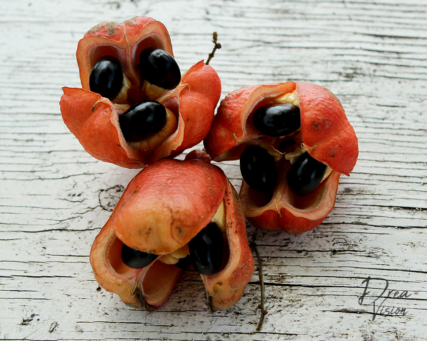

Traditionally served as a breakfast meal on the weekends, there was never a moment that I can remember NOT eating ackee & saltfish. My grandmother would serve it with a variety of sides: boiled green banana, roasted breadfruit, callaloo, plantains, fried dumplings and even white rice.
Ackee, Jamaica's national fruit, is as deadly as it is delicious. Originally from West Africa, it migrated to Jamaica in the late 18th century and is now the country's national fruit as well as a SIGNATURE breakfast dish (although my Grandmother would eat it anytime she felt like it). What makes ackee dangerous is picking it before it ripens as the unripe ackee fruit contains the poison, hypoglycin which if consumed, can lead to a coma or death. If you happen to get your hands on fresh ackee, you must wait until the fruit opens and the pods turn red. When ackee opens, the only edible part is the yellow, fleshy arilli...everything else should be discarded.
Don't let this information scare you! Most ackee outside of Jamaica comes already ripened and canned so it is guaranteed that you won't die unless the death is related to enjoying such a tasty treat. This is Jamaica's national dish! Ackee & Saltfish is something one definitely must try. We will be using canned ackee for this recipe and trust that the finished product will leave your tastebuds satisfied. Buh bye bacon and eggs!

Soak codfish in cold water overnight to remove excess sodium. Place saltfish in a saucepan and cover with cold water. Bring to a boil and cook for 15-20 minutes. Drain water and cover saltfish with fresh water, boiling again for an additional 30 minutes. Remove saltfish from water and flake with a fork. Set aside.
Heat cooking oil in a skillet and saute garlic, tomato, onions, and thyme cooking until soft; roughly ten minutes. Drain ackee and add to pot along with saltfish stirrly gently as you don't want saltfish and ackee to be too mashed. Try to keep in large pieces. Cook for an additional 5-7 minutes and add pepper and sea salt as needed.
If you happen to get your hands on fresh ackee that has already been ripened or picked, keep fresh by bagging in a ziploc bag and storing in freezer.